LEOTherm 1.5 图解用户手册
本手册按“开始 → 设置 → 运行 → 查看 → 导出”说明操作。截图来自 v1.5 实际界面；橙框圈出操作位置，蓝色编号对应图下说明。截图使用默认英文界面，正文给出中文含义。打开离线 HTML 可点击图片查看原始尺寸。
**先选目的：**只算一个场景，读第 3 节；比较多个工况，读第 6 节；所选功能一起运行并出 PDF，读第 5 节；复现论文，使用论文复现图解手册。
1. 安装与启动
- 安装免费的 MATLAB Runtime R2021b。已有兼容 Runtime 时不必重复安装，不需要 MATLAB 许可证。
- 完整解压
LEOTherm_1.5_windows_release_illustrated.zip，例如解压到C:\LEOTherm。保留模板、图片与手册的相对位置，不直接在 ZIP 里面运行。 - 双击
LEOTherm.exe。第一次启动需建立 Runtime 缓存；等待主界面显示，不反复重启。 - 右上角
English下拉框可以切换中文。Windows 原生文件选择框使用操作系统语言。
本图解版只更新说明材料，保留原发行版已经验证的 EXE。
2. 快速开始：从哪里进入
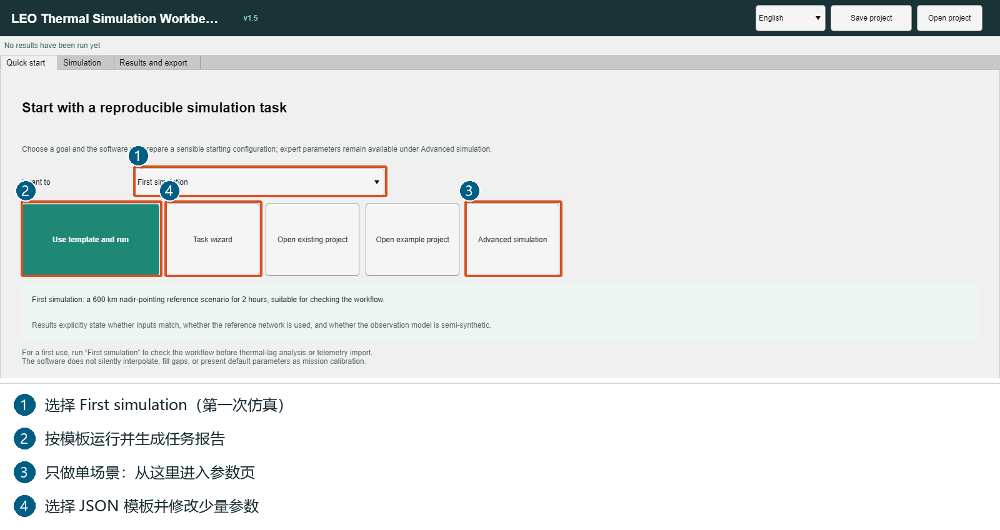
第一次使用且希望直接得到报告：
- ①
I want to选择First simulation（第一次仿真）。 - ② 点击
Use template and run（使用模板并开始仿真）。这会使用预设场景运行完整任务，不是单场景局部按钮。 - 在随后弹出的目录选择框中，选择结果保存父目录，例如
C:\LEOThermResults。软件新建任务子目录，不要求把结果放在安装目录。 - 等待完成，查看任务报告与数据。首次练习无需网格、遥测或设备档案。
只想修改参数并计算单场景时，点击 ③ Advanced simulation。④ Task wizard 是 JSON 模板向导。模板快捷运行会替换未保存的场景与网络配置，请先保存自己的项目；论文复现入口则保留当前工作区设置。
3. 单场景：照着填写并只运行一次
进入 Simulation → Single scenario（仿真 → 单场景）。窗口较小时向下滚动输入区，Run single scenario 固定在输入区底部。
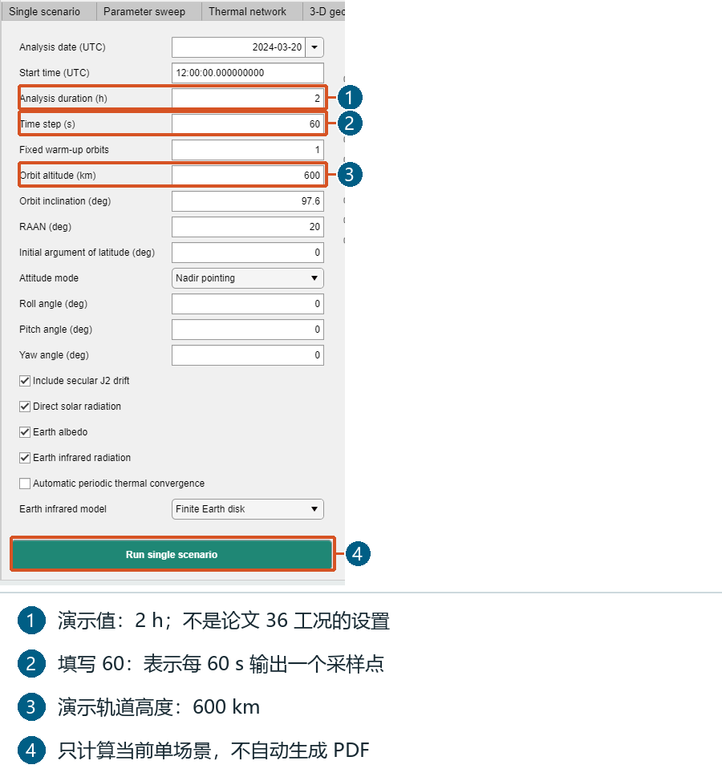
| 字段 | 练习设置 | 含义 |
|---|---|---|
| Analysis date (UTC) | 2024-03-20 | 协调世界时起始日期 |
| Start time (UTC) | 12:00:00 | 起始时刻，不是本机时间 |
| Analysis duration (h) | 2 | 分析时长 2 小时 |
| Time step (s) | 60 | 输出采样间隔 60 秒 |
| Fixed warm-up orbits | 1 | 分析前先积分 1 圈 |
| Orbit altitude (km) | 600 | 高度 600 km |
| Orbit inclination (deg) | 97.6 | 轨道倾角 |
| RAAN (deg) | 20 | 升交点赤经 |
| Initial argument of latitude (deg) | 0 | 初始轨道相位 |
| Attitude mode | Nadir pointing | 对地定向 |
| Roll / Pitch / Yaw angle (deg) | 0 / 0 / 0 | 姿态偏置 |
| Automatic periodic thermal convergence | 不勾选 | 本练习用固定预热圈数 |
太阳直射、反照和地球红外保持默认勾选；红外模型保持 Finite Earth disk。
- 按表设置；不用更改上方完整任务的勾选项。
- 点击图中 ④
Run single scenario。只计算当前场景，不自动跑扫描、三维、遥测或标定。 - 完成后本页显示曲线，也可进入
Results and export查看指标。 - 本页运行不自动生成 PDF，也不弹出报告保存目录；需要 PDF 时按下一节导出。
这些值是入门练习，不是论文 36 工况协议。Time step 表示输出采样间隔，不等于求解器内部每次积分的步长。
4. 结果与导出：主动生成分析 PDF
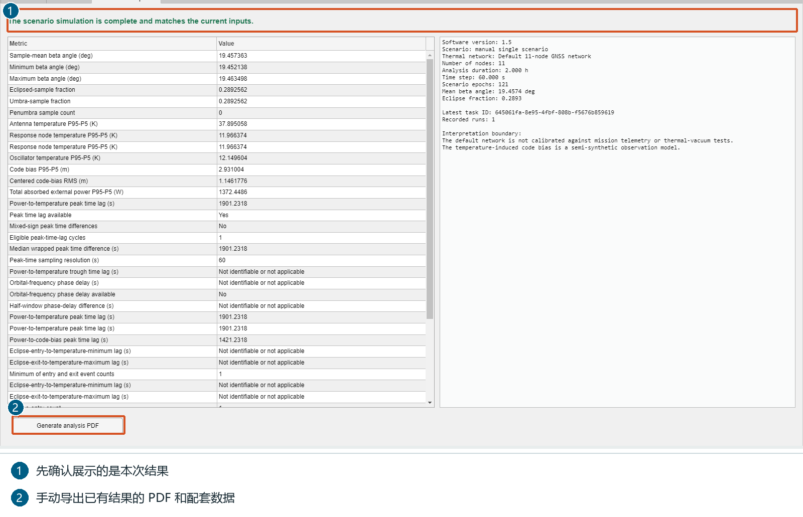
- 打开
Results and export。看顶部状态和右侧任务摘要，确认结果对应当前输入；改参数后要重新计算。 - 左侧表格是温度与响应指标，右侧摘要记录场景和已执行内容。
- 点击 ②
Generate analysis PDF，选择可写的保存父目录。 - 打开新导出目录的
report子目录，查看thermal_report_en.pdf或thermal_report_zh.pdf，按本次语言设置生成。 - 同目录保留图形、CSV、MAT。优先检查
thermal_node_statistics.csv、thermal_diagnostics.csv、thermal_conductive_links.csv和thermal_metric_definitions.csv。
P95−P5 是第 95 与第 5 百分位温度之差，不是最高温减最低温。指标名称、单位和定义都可在定义 CSV 中查到。
5. 完整任务：可选功能一起运行并出报告
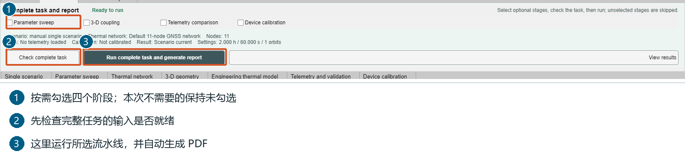
这个区域位于仿真各页上方，不只在快速开始页可用。
- 先在各页准备设置。① 按需选择四个阶段；四项都不勾选也能做基础热仿真并出报告。
- 点击 ②
Check complete task。补齐提示缺少的输入，或取消本次不需要的阶段。 - 点击 ③
Run complete task and generate report，选择保存父目录。 - 完成后查看
pipeline_status.json、模型快照、计算数据及report中的 PDF。报告只包含实际执行阶段的内容。
| 阶段 | 所需准备 | 作用 |
|---|---|---|
| Parameter sweep | 扫描模式、范围和当前场景 | 比较多个工况 |
| 3-D coupling | 表面/体网格、材料、耦合边界 | 表面—体传热 |
| Telemetry comparison | CSV、列映射、单位、有效样本 | 与遥测比较 |
| Device calibration | 设备档案、参数范围、训练日期与数据 | 估计后将参数用于任务 |
上方完整任务按钮与各页自己的按钮不同：前者跑所选流水线并出报告，后者只算当前模块。
6. 参数扫描：从两个工况开始
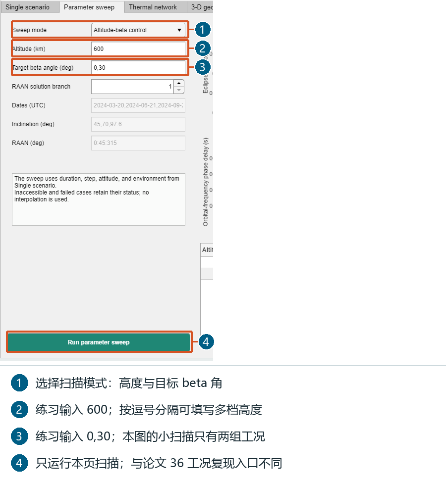
- 先在单场景页准备时长、采样、姿态和环境；扫描沿用这些设置及当前网络。
- 进入
Parameter sweep，选择高度与目标 beta 角扫描。 Altitude (km)填600；Target beta angle (deg)填0,30；RAAN 解分支填1。- 点击
Run parameter sweep。此练习是 1 个高度 × 2 个 beta 角 = 2 个工况，图中对应实际小扫描。 - 看右侧表格与曲线；以后可用逗号列表，如
400,600,800，增加档位会增加计算量。
普通扫描不自动包含论文的三档结构—射频前端热导、周期初始化和步长加密。论文 36 工况请用论文复现入口。
7. 热网络：修改物理参数后重新计算
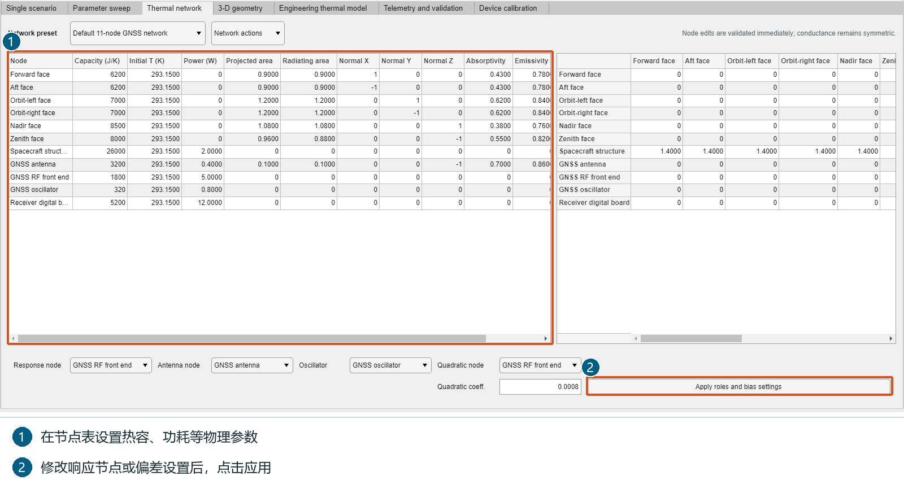
- 进入
Thermal network，默认是 11 节点参考网络；没有设备参数时先保持默认。 - 左表设置热容（J/K）、初始温度（K）、功耗（W）、面积（m²）、法向和光学属性，横向滚动可看后续列。
- 右侧导热矩阵设置节点间热导（W/K），按行、列节点名找连接；软件保持矩阵对称。
- 改响应节点、天线、振荡器或偏差设置后，点
Apply roles and bias settings。 - 回到单场景页重新运行；只改表格不会自动生成新结果。
默认内部节点可通过导热交换热量；对外投影/辐射面积为零不等于没有传热。设备参数应以设备资料为依据。
8. 三维：按目的选择表面、体或耦合
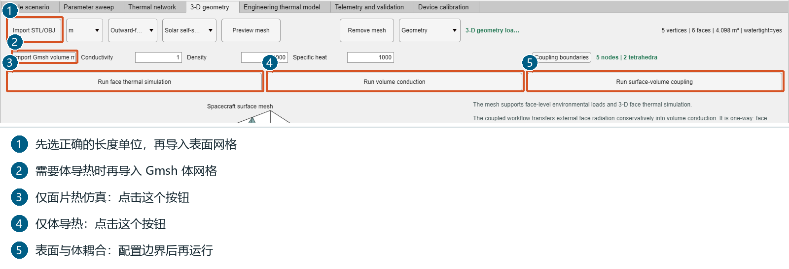
3-D geometry中先选文件长度单位，再用Import STL/OBJ导入表面；点Preview mesh核对尺寸、朝向和面片。- 只算面片时点击
Run face thermal simulation，无需体网格。 - 体导热需要
Import Gmsh volume mesh，并设置导热系数（W/(m·K)）、密度（kg/m³）、比热（J/(kg·K)）；点Run volume conduction。 - 表面—体耦合需要两类网格；先用
Coupling boundaries设置接触和边界，再点Run surface-volume coupling。 - 希望任务报告包含该项时，在完整任务区勾选
3-D coupling，检查后运行。
本图使用发行包 examples/assets/example_coupled_surface.obj 和 example_two_tetrahedra.msh 演示导入，不是实际卫星验证。这两个极小网格用于熟悉输入；实际研究请换成自己的兼容网格。
9. 工程热模型交换
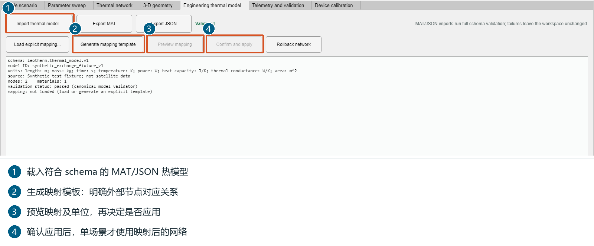
Import thermal model...接受符合leotherm.thermal_model.v1的 MAT/JSON；不能把任意文件改后缀后直接用。 入门可选择发行包的examples/projects/06_engineering_model_exchange.json。- 核对摘要中的单位、节点、材料与来源。
- 需要转为当前热网络时，生成或载入显式映射模板，指定外部节点的对应关系。
- 点
Preview mapping，确认后点Confirm and apply；回单场景页重新计算。 Export MAT/Export JSON保存当前规范模型；Rollback network恢复网络。
10. 遥测：先映射、预检，再比较
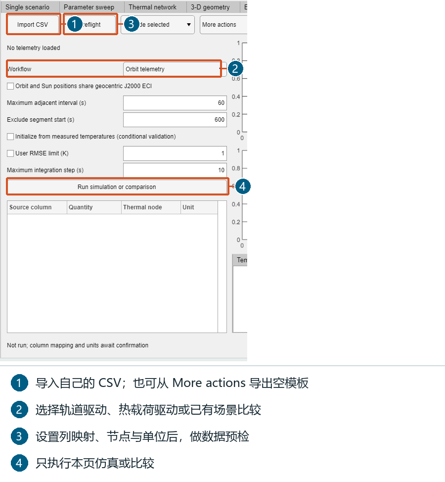
- 无数据时可从
More actions → CSV template导出空模板；有数据则点Import CSV。 - 在左侧列映射表指定源列、物理量、热节点与单位。
Workflow选择Orbit telemetry（轨道驱动）、Measured heat loads（热载荷驱动）或Validate current scenario（比较已有场景）；第三种需先计算对应场景。- 设置最大相邻时间间隔与起始排除时长。轨道驱动时确认轨道与太阳位置同为地心 J2000 惯性系，只有满足时才勾选相应声明。
- 点
Preflight，处理数据、单位或映射问题，再点Run simulation or comparison。 - 选择节点查看曲线、残差、有效评分样本和统计；用
Export telemetry导出本页结果。
Synthetic demo data 是合成教程数据，不是在轨实测。软件不自动插值填补缺测；没有遥测时跳过该阶段即可。
11. 设备标定：约束参数与训练日期
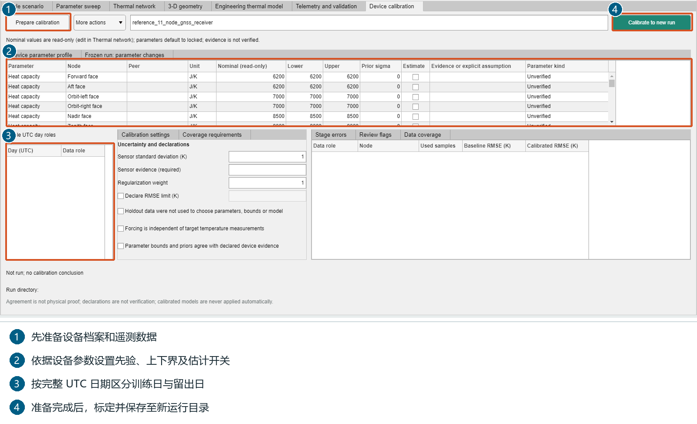
- 先导入可用遥测，再进入
Device calibration。 - 用
Prepare calibration准备；More actions可载入当前设备、导入设备档案或载入遥测日期。 - 核对名义值（只读，要修改请到热网络页）；在参数表设置先验标准差、估计开关及上下界，范围应有设备依据。
- 按完整 UTC 日分配训练与留出角色；留出日不参与拟合。
- 填写传感器误差依据和所需声明，满足事实后才确认。
- 点
Calibrate to new run，选择新运行位置；检查估计值及相对先验的变化，然后保存项目。
本图只展示配置位置，没有虚构成功结果。缺少设备依据或遥测时可跳过标定。
12. 模板和项目：少填参数、保存自己的设置
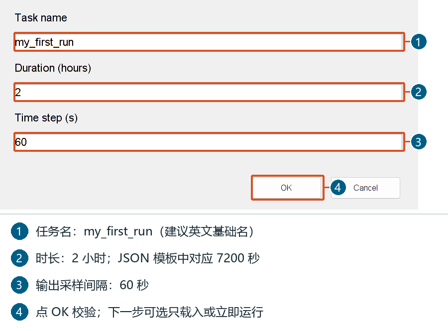
- 快速开始点
Task wizard，选择内置模板或Choose another JSON template...。 - 输入框依次填写任务名、
Duration (hours)、Time step (s)；例：my_first_run、2、60。 - 校验后选
Load only只加载，或Run now运行完整任务。想只算单场景，应先选 Load only，再用单场景局部按钮。 - 文件方式：复制
templates/01_first_simulation.json，修改scenario.durationS和scenario.timeStepS，再导入。JSON 时长单位是秒，如 7200，而向导时长单位是小时，如 2。 - 右上角
Save project保存工作区；Open project恢复。打开项目还会恢复它保存时的语言。
13. 进度、停止与关闭
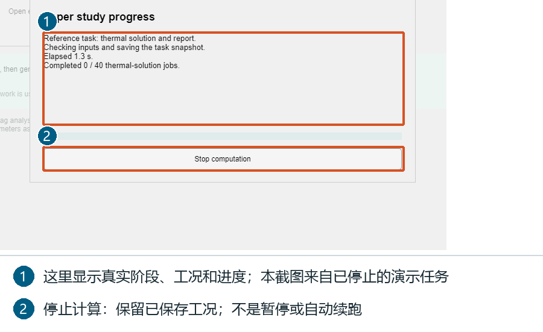
- 面板展示阶段、当前工况、初始化/积分进度和用时；不是预估剩余时间。
Stop computation请求停止，变为Stopping...；它不是暂停，不自动续跑。- 检查点停止保留已保存工况；正在执行的单次图形/PDF 导出会结束后响应下一检查点。
- 任务标记
cancelled，不是complete；重新运行请用新目录。 - 运行时关闭主窗口会先请求停止，并处理未保存项目。
图来自实际启动后停止的教程任务，只用于展示进度控件；完成验收见论文复现手册。
14. 常见问题
| 情况 | 下一步 |
|---|---|
| 双击 EXE 不启动 | 检查 Runtime 为 R2021b，ZIP 已完整解压 |
| 第一启动慢 | 等待缓存建立，不反复重启或删除 Runtime 文件 |
| 想只算一次却跑了更多 | 使用单场景底部 Run single scenario，不用完整任务或论文按钮 |
| 改参数后仍是旧曲线 | 重算相应模块，然后导出 |
| 完整任务按钮不可用 | Check complete task，补齐输入或取消多余阶段 |
| 找不到结果 | 查看选定父目录中新建的任务目录及 report 子目录 |
各模块页面首次使用时加载。随包视频仍标为 v1.2.10；本版运行按钮以本图解手册为准。生成的文件基础名与子目录名使用英文 ASCII；用户已有父目录与导入文件不改名。